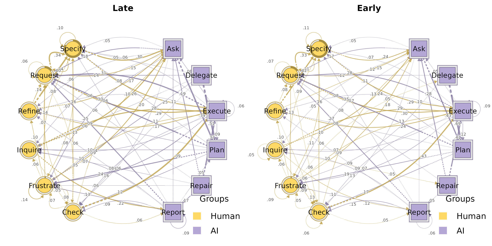
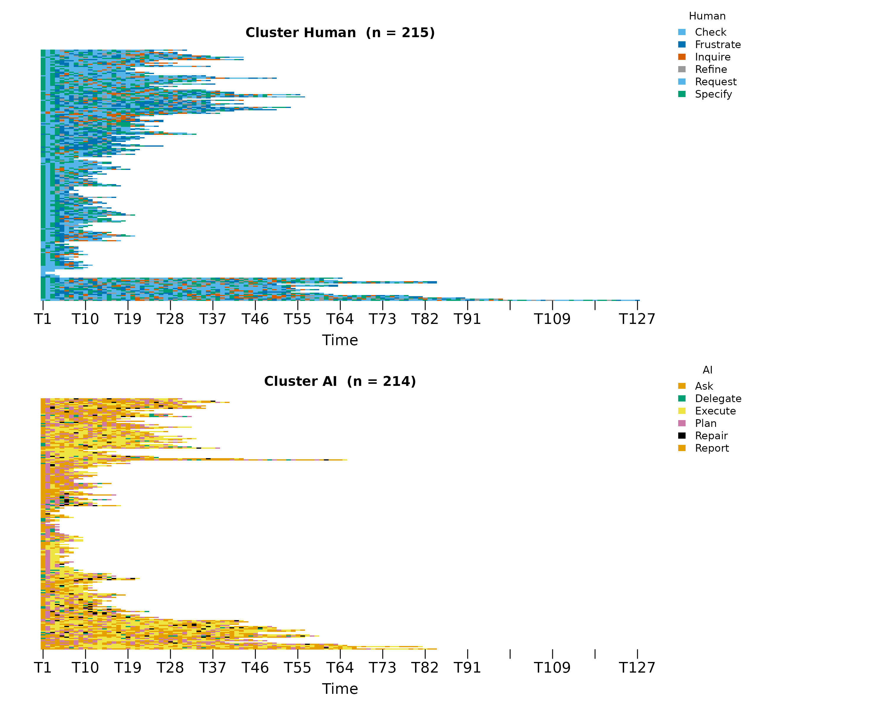
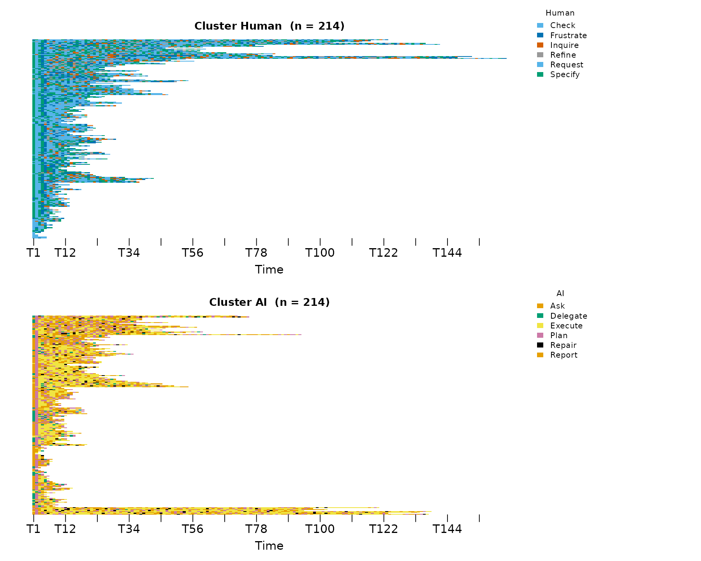
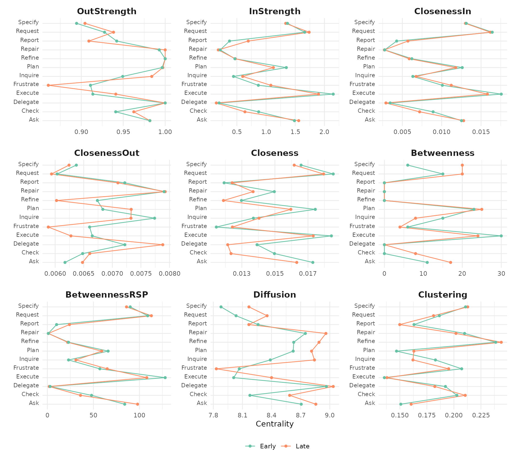
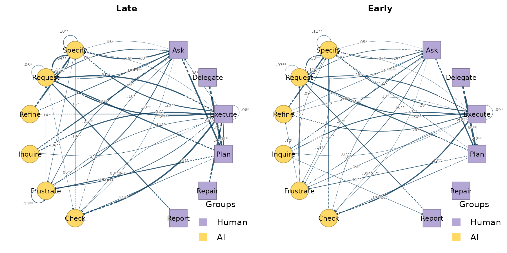
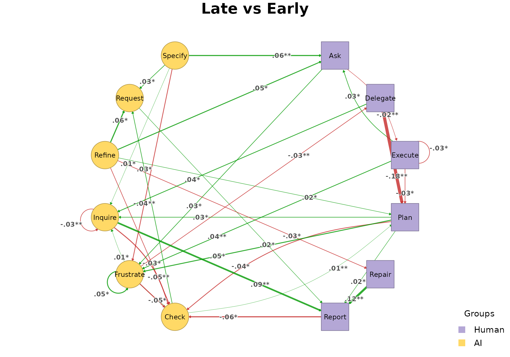
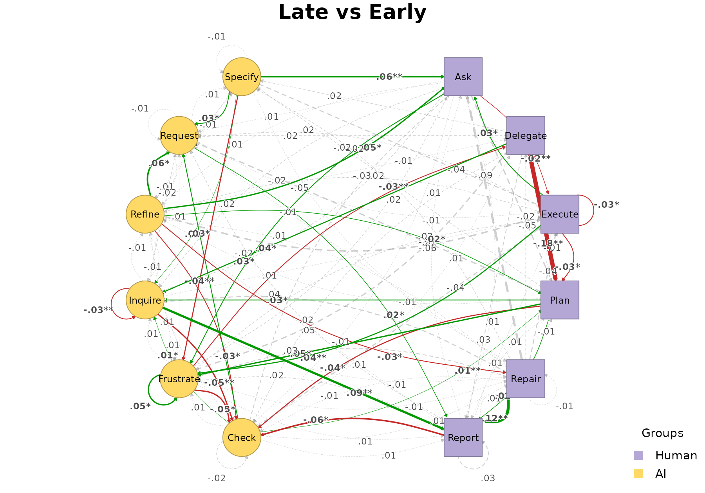

A common HTNA question is whether the same actor partition behaves
differently across cohorts – e.g. early-phase versus late-phase
sessions of an interaction corpus; control vs. experimental groups;
female vs. male, etc. build_htna() supports this directly
by passing the session-level grouping column to the function. The result
is one network per cohort, each preserving the actor
partition. Every other function in htna recognises the
grouped result and iterates over cohorts.
An early / late example
We use the bundled human_ai corpus (Human + AI codes
from Nestimate::human_long / ai_long, with a
slightly simplified alphabet – see ?human_ai). Sessions are
split chronologically: ordered by their first session_date
(with session_id as a deterministic tiebreak), the first
half of the sessions form the Early cohort and the rest form
the Late cohort, reflected in the phase column.
The count below is the number of coded events (rows) in each cohort:
Building one network per cohort
build_htna() takes the long data frame, the actor-type
column, and a group argument naming the session-level
cohort column:
grp <- build_htna(
human_ai,
actor_type = "actor_type",
group = "phase"
)
names(grp)
#> [1] "Late" "Early"The result is a named list of HTNA networks of class
htna_group, one per cohort. summary()
describes every cohort in turn: its actor partition, how the non-zero
edges distribute across the actor blocks, and the network-level
metrics.
summary(grp)
#> <htna_group: 2 cohorts (Late, Early)>
#>
#> === Late ===
#> <htna network>
#> Method: relative
#> Sessions: 215 (max 208 timesteps)
#> Nodes: 12
#> Edges: 134 / 144 (non-zero)
#>
#> Actor types (2):
#> Human (6 nodes): Check, Frustrate, Inquire, Refine, Request, Specify
#> AI (6 nodes): Ask, Delegate, Execute, Plan, Repair, Report
#>
#> Edge counts by actor (rows = source, cols = target):
#> Human AI
#> Human 35 36
#> AI 36 27
#>
#> Network metrics:
#> metric value
#> Node Count 1.200000e+01
#> Edge Count 1.340000e+02
#> Network Density 1.000000e+00
#> Mean Distance 2.438201e-02
#> Mean Out-Strength 1.000000e+00
#> SD Out-Strength 3.347448e-17
#> Mean In-Strength 1.000000e+00
#> SD In-Strength 6.109845e-01
#> Mean Out-Degree 1.116667e+01
#> SD Out-Degree 9.374369e-01
#> Centralization (Out-Degree) 5.785124e-02
#> Centralization (In-Degree) 5.785124e-02
#> Reciprocity 9.600000e-01
#>
#> === Early ===
#> <htna network>
#> Method: relative
#> Sessions: 214 (max 287 timesteps)
#> Nodes: 12
#> Edges: 135 / 144 (non-zero)
#>
#> Actor types (2):
#> Human (6 nodes): Check, Frustrate, Inquire, Refine, Request, Specify
#> AI (6 nodes): Ask, Delegate, Execute, Plan, Repair, Report
#>
#> Edge counts by actor (rows = source, cols = target):
#> Human AI
#> Human 35 36
#> AI 36 28
#>
#> Network metrics:
#> metric value
#> Node Count 12.00000000
#> Edge Count 135.00000000
#> Network Density 1.00000000
#> Mean Distance 0.02704448
#> Mean Out-Strength 1.00000000
#> SD Out-Strength 0.00000000
#> Mean In-Strength 1.00000000
#> SD In-Strength 0.65969479
#> Mean Out-Degree 11.25000000
#> SD Out-Degree 0.96530730
#> Centralization (Out-Degree) 0.05785124
#> Centralization (In-Degree) 0.05785124
#> Reciprocity 0.96000000Because both cohorts were built from the same alphabet, both networks
have the same nodes – which is what
permutation_htna() and plot_htna_diff()
compare edge by edge.
Plotting per cohort
plot_htna() iterates over cohorts and draws one network
per element. It does not manage the layout grid – wrap with
par(mfrow = ...) if you want a panel:

par(op)Per-actor sequences per cohort
sequence_plot_htna() works the same way:
sequence_plot_htna(grp, type = "index")

Centralities per cohort
centralities_htna(grp) returns one tidy data frame, with
a leading group column identifying the cohort:
ct <- centralities_htna(grp)
head(ct, 10)
#> group node actor OutStrength InStrength ClosenessIn ClosenessOut
#> 1 Late Ask AI 0.9818031 1.5589461 0.012787860 0.006478909
#> 2 Late Check Human 0.9626168 0.6386122 0.007197319 0.006605395
#> 3 Late Delegate AI 1.0000000 0.1490735 0.002917657 0.007882479
#> 4 Late Execute AI 0.9411332 1.8979808 0.015804367 0.006276049
#> 5 Late Frustrate Human 0.8607443 1.0820451 0.011215144 0.005880667
#> 6 Late Inquire Human 0.9839817 0.6005806 0.006753107 0.007325994
#> 7 Late Plan AI 0.9972028 1.1252050 0.011785910 0.007330088
#> 8 Late Refine Human 1.0000000 0.4740402 0.005877737 0.006024616
#> 9 Late Repair AI 1.0000000 0.1826564 0.002721100 0.007924645
#> 10 Late Report AI 0.9090909 0.6955351 0.005709637 0.007097699
#> Closeness Betweenness BetweennessRSP Diffusion Clustering
#> 1 0.01632119 17 98 8.856237 0.1604590
#> 2 0.01234619 8 36 8.586347 0.2104778
#> 3 0.01214724 0 2 9.035552 0.1823412
#> 4 0.01731834 24 108 8.400011 0.1380461
#> 5 0.01243172 4 65 7.830994 0.1951504
#> 6 0.01403984 8 31 8.842141 0.1621084
#> 7 0.01596275 25 59 8.812412 0.1629786
#> 8 0.01188981 0 22 8.889109 0.2437973
#> 9 0.01368159 0 1 8.960075 0.2019068
#> 10 0.01241482 0 24 8.166331 0.1499067plot_centralities() draws one panel per measure and
overlays one line-and-point profile per cohort, so cohort-level
differences on each measure read along the same node axis:
plot_centralities(grp, by = "group")
Bootstrap per cohort
bootstrap_htna(grp) runs the bootstrap on each cohort
and returns a group of bootstrap results.
plot_htna_bootstrap() iterates again:
boots <- bootstrap_htna(grp, iter = 200)
op <- par(mfrow = c(1, 2))
plot_htna_bootstrap(boots, display = "significant")
par(op)Centrality stability per cohort
centrality_stability_htna(grp) runs the case-dropping
centrality stability check on each cohort and returns a named list of
htna_stability objects. Each cohort’s cs
reports the largest session-drop proportion at which
InStrength, OutStrength, and
Betweenness still correlate with the originals at the
default 0.7 / 0.95 threshold:
stab <- centrality_stability_htna(grp, iter = 100, seed = 1)
stab
#> HTNA Centrality Stability Analysis (Grouped)
#> ============================================
#>
#> --- Group: Late ---
#> HTNA Centrality Stability Analysis
#> ===================================
#> Centrality Stability (100 iterations, threshold = 0.7)
#> Drop proportions: 0.1, 0.2, 0.3, 0.4, 0.5, 0.6, 0.7, 0.8, 0.9
#>
#> CS-coefficients:
#> InStrength 0.90
#> OutStrength 0.90
#> Betweenness 0.80
#>
#> --- Group: Early ---
#> HTNA Centrality Stability Analysis
#> ===================================
#> Centrality Stability (100 iterations, threshold = 0.7)
#> Drop proportions: 0.1, 0.2, 0.3, 0.4, 0.5, 0.6, 0.7, 0.8, 0.9
#>
#> CS-coefficients:
#> InStrength 0.90
#> OutStrength 0.80
#> Betweenness 0.80The report lists the CS-coefficient of each measure within each cohort. By the Epskamp et al. (2018) convention, CS > 0.25 is acceptable and CS > 0.5 is preferred for inferential use; the maximum reportable value is the upper bound of the drop-proportion grid. A cohort comparison of centralities is only meaningful for measures that are stable in both cohorts.
Comparing the two cohorts
Both networks share an alphabet, so their edges can be compared one
by one. Pass the grouped network as it is to
permutation_htna(): it tests every cohort pair and returns
one result per pair, named
"<first> vs <second>".
plot_htna_diff() draws each pair as the difference network
first minus second, titled with the pair name; positive
differences are green, negative red, and only the edges that differ
significantly are drawn:
perm <- permutation_htna(grp, iter = 500, seed = 1)
plot_htna_diff(perm)
With show_nonsig = TRUE the non-significant differences
are added as dashed grey edges, so the full difference network is
visible together with the significance verdict:
plot_htna_diff(perm, show_nonsig = TRUE)
Cohort-level pattern comparison
permutation_htna() tests edge-level differences between
cohorts. For pattern-level differences — recurring k-grams that
characterise one cohort over the other — see the sequence comparison vignette. The
same grouped network feeds directly into
sequence_compare_htna(), which also supports a
level = "type" option that runs the comparison on
meta-paths (e.g. Human -> AI -> Human) rather than
concrete state codes.
Working with the grouped object
Pass the result of build_htna(..., group = ...) as it is
to the functions above; each one iterates over the cohorts (or, for
permutation_htna(), bayes_compare_htna() and
compare_htna(), over the cohort pairs) and labels its
output with the cohort names. There is no need to extract cohorts by
hand. To analyse a single cohort on its own, build it directly from that
cohort’s sessions, e.g.
build_htna(subset(human_ai, phase == "Early"), actor_type = "actor_type"),
which yields the same network as the Early element of
grp.